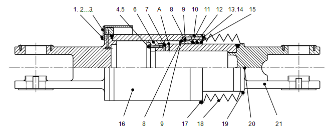
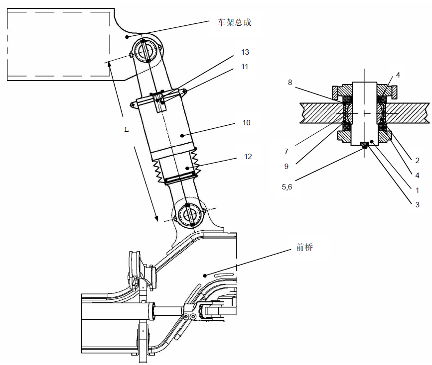
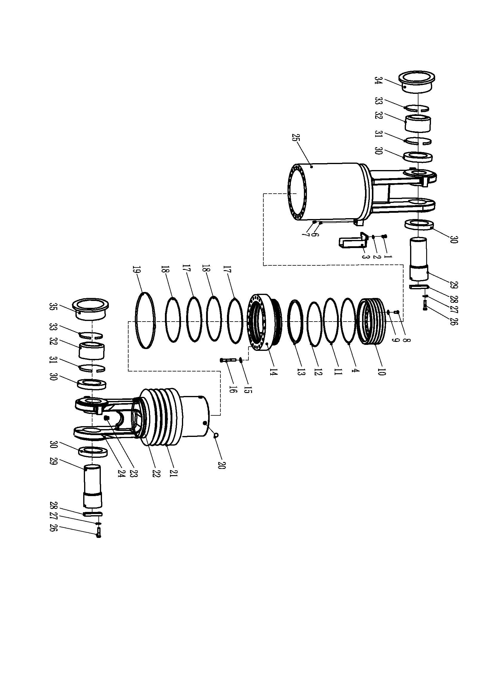
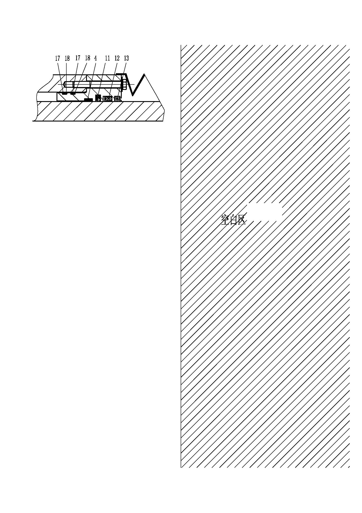
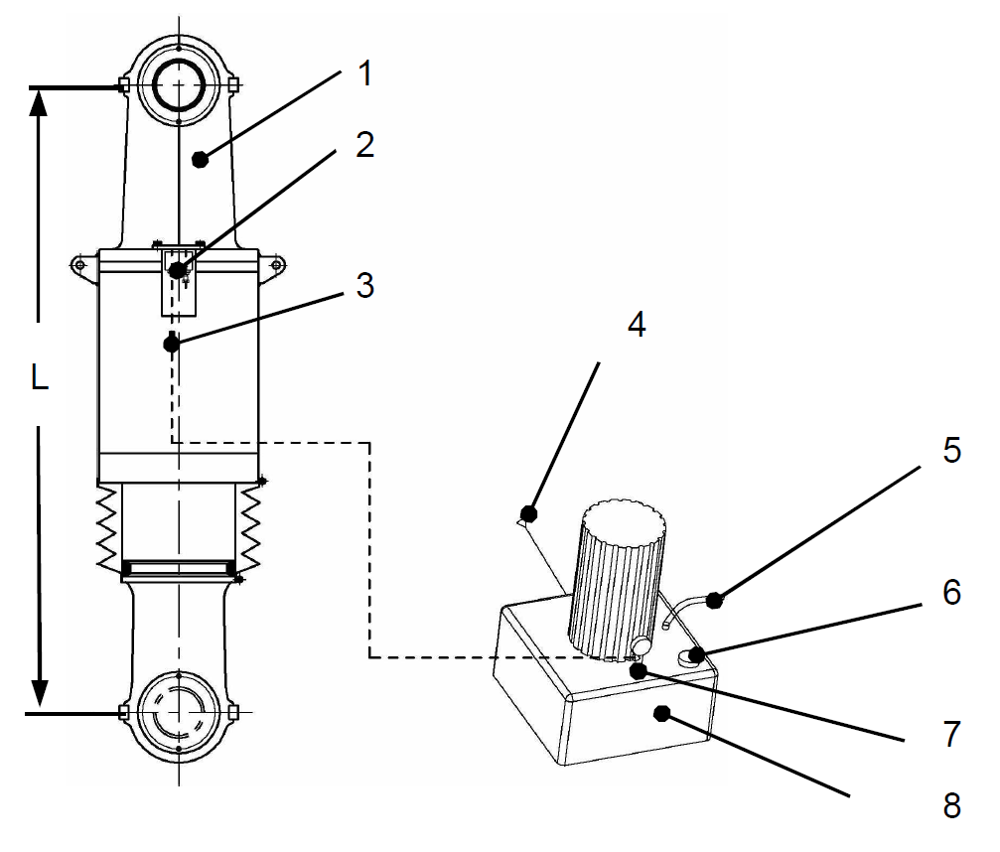
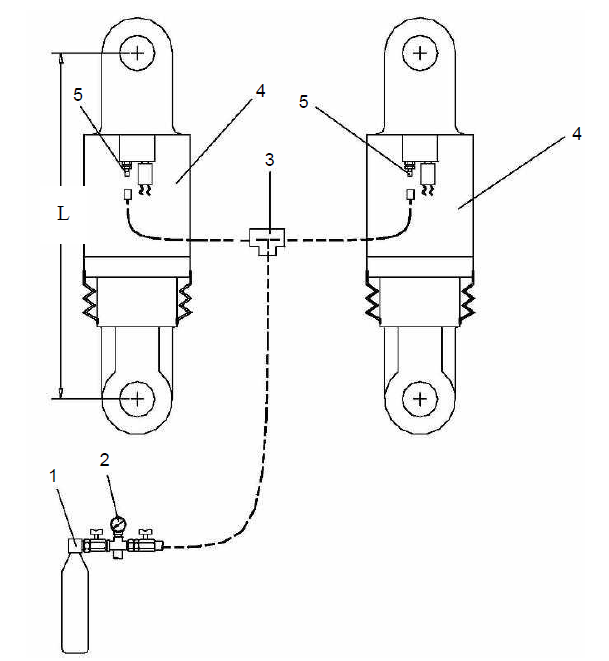
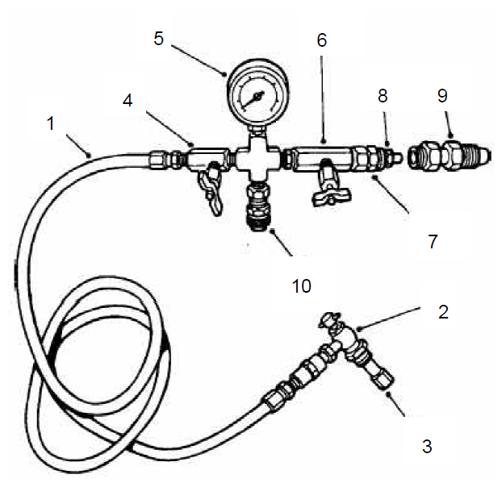

前悬缸总成. · FRONT RIDE CYLINDER ASSY
Спецификация
1
Болт
7
Шарик
13
Болт
19
Хомут
2
Пружинная шайба
8
О-образное кольцо
14
Шайба
20
Дренажный клапан
3
Колпачок клапана
9
Стопорное кольцо
15
Пылезащитное кольцо
21
Шток
4
Болт
10
Направляющая втулка
16
Гильза цилиндра
5
Шайба
11
Уплотнительное кольцо
17
Хомут
6
Поршень
12
Уплотнительное кольцо
18
Пылезащитная втулка
Рис. 1. Вид цилиндра передней подвески в разрезе
Цилиндр передней подвески в сборе
Описание и расположение
Номера позиций в скобках совпадают с номерами позиций на рис. 2.
Цилиндр передней подвески (10) представляет собой самозаполняющийся цилиндр подвески с переменным отношением масла к азоту, он висит на внешней стороне рамы, устанавливается между верхней поперечиной рамы и передним мостом.
Управление
Номера позиций в скобках совпадают с номерами позиций на рис. 1.
Цилиндр передней подвески предназначен для поглощения колебаний от дороги. Он в основном состоит из штока (21), гильзы цилиндра (16) и поршня (6), гильза цилиндра (16) с головкой устанавливаются на раме в сборе, наконечник штока (21) соединяется с верхней частью переднего моста. Корпус цилиндра заполнен гидравлическим маслом и сжатым азотом.
В статическом состоянии во внутренней полости гильзы цилиндра (16) сжатый азот может создать достаточное усилие, необходимое для выдерживания веса карьерного самосвала. Когда колеса находятся под ударными воздействиями, передаваемыми от неровностей дороги, шток (21) входит в гильзу цилиндра (16) под нагрузкой, втягивание штока (21) заставляет осуществлять сжатие азота в гильзе цилиндра, скорость перемещения штока (21) уменьшается до момента остановки вслед за повышением давления азота. Упругое свойство сжатого азота заставляет шток (21) выдвинуться в исходное состояние. Когда шток (21) сжимает азот, шарик (7) отодвигается, гидравлическое масло поступает в масляную полость между штоком (21) и гильзой цилиндра (16). Когда шток (21) выдвигается, гидравлическое масло в масляной полости между штоком (21) и гильзой цилиндра (16) заставляет шарик (7) возвращаться в исходное состояние, при этом масло под давлением из масляной полости между штоком (21) и гильзой цилиндра (16) через демпфирующее отверстие (A) поступает во внутреннюю полость штока (21), поскольку пропускная способность демпфирующего отверстия (A) небольшая, скорость потока относительно большая, демпфирующее действие более сильное, это дает возможность замедлять отскок, осуществлять функцию амортизации, таким образом уменьшается скорость выдвижения штока.
ПРЕДУПРЕЖДЕНИЕ
Корпус цилиндра находится под действием давления. Перед открытием клапана или штуцера следует сбросить давление в соответствии с порядком, указанным в разделе «Сброс давления в цилиндре подвески», резкий сброс может привести к телесным повреждениям и повреждению оборудования.
Убедиться в надлежащей надежности упорных клиньев для предотвращения перемещения автомобиля и достаточной грузоподъемности подъемного оборудования, надежном креплении и высокой безопасности во избежание телесных повреждений и материального ущерба.Техническое обслуживание и регулировка
Номера позиций в скобках совпадают с номерами позиций на рис. 2.
Периодическое техническое обслуживание должно включать следующие виды работ:
1. Проверить открытую часть штока (12) и клапан наполнения (11) на наличие износа, повреждений и утечки гидравлического масла. В случае обнаружения проблем, отремонтировать и заменить по мере необходимости. Если существует необходимость повторного наполнения гидравлическим маслом и азотом, проводить наполнение в соответствии с порядком наполнения маслом и газом, указанным в данной части
2. Проверить все остальные элементы на наличие повреждений, ослабления или поломки. Отремонтировать или заменить по мере необходимости.
3. Визуально проверить все компоненты и проводы системы взвешивания на наличие повреждений или износа. Отремонтировать или заменить по мере необходимости.
4. Проверка работоспособности цилиндра подвески производится в следующем порядке:
a. Дайте карьерному самосвалу поработать достаточное время, убедитесь в нахождении двух цилиндров при нормальной рабочей температуре.
b. Остановить ненагруженный автомобиль на ровной площадке, как показано на рис. 2, измерить расстояние (L) между центрами верхнего и нижнего установочных штырей цилиндра передней подвески (10), измеренное значение должно составлять 69,125 дюйма (1756 мм). Проверить отклонение, допустимое отклонение составляет примерно ±1/2 дюйма (13 мм). Если значение (L) не находится в допустимом пределе, то проверить и отремонтировать в соответствии с порядком наполнения маслом и газом, указанным в данной части.
c. В случае обнаружения чрезмерной упругости корпуса цилиндра вследствие неустойчивости движения карьерного самосвала или слишком большого хода штока, проверить и отремонтировать в соответствии с порядком наполнения маслом и газом, указанным в данной части.
.
Спецификация
1
Палец
5
Болт
9
Упорное кольцо
13
Штуцер датчика давления
2
Шаровой подшипник
6
Шайба
10
Цилиндр передней подвески
3
Упор пальца
7
Втулка
11
Клапан наполнения
4
Пылезащитное кольцо
8
Упорное кольцо
12
Шток
Рис. 2. Монтажная схема цилиндра передней подвески
Снятие
Номера позиций в скобках совпадают с номерами позиций на рис. 2.
ПРЕДУПРЕЖДЕНИЕ
При подъеме больших, тяжелых деталей или автомобиля необходимо обеспечить безопасность и надежность подъемного оборудования, в противном случае это может привести к телесным повреждениям и материальному ущербу.
ПРЕДУПРЕЖДЕНИЕ
Убедиться в надлежащей надежности упорных клиньев для предотвращения перемещения автомобиля и достаточной грузоподъемности подъемного оборудования, надежном креплении и высокой безопасности во избежание телесных повреждений и материального ущерба.Снятие цилиндра передней подвески производится в следующем порядке:
1. Cтановить автомобиль в безопасном месте, включить стояночный тормоз, выключить двигатель и главный выключатель источника питания.
2. Поворачивать рулевое колесо влево и вправо, сбросить давление в системе рулевого управления до тех пор, пока колеса не станут неподвижными. Подложить клинья под колеса, отключить главный переключатель АКБ.
3. Поднимать переднюю часть карьерного самосвала до момента достижения полного ход штока каждого цилиндра подвески и отрыва шин от земли. Зафиксировать передний мост с помощью подходящих упорных клиньев в этом положении, затем медленно опустить карьерный самосвал до момента снижения нагрузки с каждого из двух цилиндров передней подвески (10) и пальцев (1) до нуля. Подпирать раму с помощью упорных клиньев.
4. Отсоединить разъем датчика давления в системе взвешивания.
5. Полностью сбросить давление азота в двух цилиндрах передней подвески (10) в соответствии с порядком сброса давления в цилиндре подвески, указанным в данной части.
6. Перед снятием пальца (1) следует подпирать с умеренным усилием цилиндр передней подвески (10), чтобы обеспечить прочность крепления цилиндра передней подвески (10) после снятия пальца (1).
ПРИМЕЧАНИЕ: При снятии цилиндра передней подвески (10) сначала следует снять его нижний конец, после снятия нижнего конца существует вероятность выдвижения штока (12), следует обратить особое внимание на безопасность.
7. Снять шайбы (6), болты (5) и упоры пальцев (3) для крепления нижнего конца цилиндра передней подвески (10) и соединительного пальца (1) переднего моста, затем медленно выбить палец (1) молотком с мягким бойком, снять пылезащитное кольцо (4).
8. Снять верхний конец цилиндра передней подвески (10) согласно шагу 7.
9. Снять цилиндр передней подвески (10), разместить его в чистой рабочей зоне для облегчения разборки.
10. Проверить шарикоподшипник (2), втулку (7) и стопорные кольца (8 и 9) рамы и переднего моста на наличие повреждений или коробления. В случае обнаружения любых дефектов, следует их снять и заменить.
11. Повторять шаги от 6 до 9 по мере необходимости, чтобы снять другой цилиндр передней подвески (10).
Разборка
Цифры в круглых скобках показаны на рисунке 3.
Разборка цилиндра передней подвески производится в следующем порядке:
1. Открутить сливной клапан (23) на конце штоке (24), слить гидравлическое масло в предварительно подготовленную емкость.
2. Снять хомуты (19 и 22) для крепления пылезащитного чехла (21) к штоку (24) и направляющей втулке (14), затем извлечь пылезащитный чехол (21).
3. Снять болт (1), пружинную шайбу (2) и колпачок клапана в сборе (3)
Спецификация
1
Болт
10
Поршень
19
Хомут
28
Крепежный блок
2
Пружинная шайба
11
Уплотнительное кольцо
20
Шарик
29
Палец
3
Колпачок клапана в сборе
12
Уплотнительное кольцо
21
Пылезащитная втулка
30
Пылезащитное кольцо
4
Направляющая лента
13
Пылезащитное кольцо
22
Хомут
31
Упорное кольцо
5
14
Направляющая втулка
23
Дренажный клапан
32
Подшипник
6
Пробка
15
Шайба
24
Шток
33
Упорное кольцо
7
Клапан наполнения
16
Болт
25
Гильза цилиндра
34
Муфта
8
Болт
17
О-образное кольцо
26
Болт
35
Муфта
9
Шайба
18
Стопорное кольцо
27
Шайба
Рис. 3. Цилиндр передней подвески в разобранном виде
4. Снять клапан наполнения (7) и штуцер или заглушку (6) датчика давления.
5. Разместить цилиндр передней подвески в подходящем месте для облегчения разборки, снять болт (16) и шайбу (15) для крепления направляющей втулки (14) к гильзе цилиндра (25).
6. Осторожно снять гильзу цилиндра (25) со штока (24) в сборе.
7. Снять соединительный болт (8) с шайбой (9) между штоком (24) и поршнем (10).
8. Удалить по поршню (10) с помощью молотка с мягким бойком до отрыва его от конца штока (24).
ПРЕДУПРЕЖДЕНИЕ
При снятии поршня (10) следует использовать молоток с мягким бойком. Использование стального молотка может привести к телесным повреждениям брызгами металлических обломков.9. Извлечь шарик (20) со штока (24).
10. Зафиксировать шток (24) на основании пресса, отверстие на конце штока должно направляться вниз, выпрессовать шток (24) из направляющей втулки (14).
11. Снять О-образное кольцо (17) и упорное кольцо (18) с внешней канавки направляющей втулки (14), следует заменить уплотнительные кольца новыми.
12. Снять уплотнительные кольца (11 и 12), направляющую ленту (4) и пылезащитное кольцо (13) с внутренней канавки направляющей втулки (14), следует заменить уплотнительные кольца новыми.
Проверка
Цифры в круглых скобках показаны на рисунке 3.
Осмотр цилиндра передней подвески производится в следующем порядке:
1. Тщательно очистить все детали подходящим растворителем и высушить сжатым воздухом.
2. Проверить степень чистоты внутренней и внешней канавок направляющей втулки (14) и наличие/отсутствие царапин, надиров или незначительных рисок. Отполировать поврежденные поверхности точильным камнем с мелким зерном, в случае обнаружения серьезных повреждений, следует заменить поврежденные детали.
3. Проверить поверхности гильзы цилиндра (25), штока (24) и поршня (10) на наличие царапин, надиров или незначительных рисок. Отполировать поврежденные поверхности точильным камнем с мелким зерном, в случае обнаружения серьезных повреждений, следует заменить поврежденные детали.
4. Проверить другие узлы и детали цилиндра передней подвески на наличие ненормальных деформаций или чрезмерного износа, заменить поврежденные узлы и детали.
5. Проверить сливной клапан (23), штуцер или заглушку (6) датчика давления системы взвешивания и клапан наполнения (7), в случае обнаружения повреждений этих узлов и деталей, следует их отремонтировать или заменить.
6. Проверить посадочные места штока (24) и гильзы цилиндра (25), в случае обнаружения разрушения резьбы, то требуется восстановление резьбы, если резьба не может быть восстановлена, то следует заменить эти узлы и детали.
7. Проверить отверстия в подшипниках рамы и переднего моста на наличие износа или повреждений. Погрешность должна быть не более 0,001 дюйма (0,025 мм). Незначительные выступы можно убрать наждачной тканью.
ПРИМЕЧАНИЕ: Если уровень дефектов, обнаруженных на отверстии в подшипнике, превышает допустимый предел, следует обращаться к обслуживающему персонала ОАО «NHL» для получения более подробной информации о ремонте.
ПРЕДУПРЕЖДЕНИЕ
При подъеме больших, тяжелых деталей или автомобиля необходимо обеспечить безопасность и надежность подъемного оборудования, в противном случае это может привести к телесным повреждениям и материальному ущербу.Сборка
Сборка цилиндра передней подвески производится в следующем порядке:
Цифры в круглых скобках показаны на рисунке 3.
ПРИМЕЧАНИЕ: Нанести слой гидравлического масла на посадочные поверхности всех деталей для облегчения установки. Следует выполнить операции на чистом рабочем месте во избежание попадания пыли или примесей в масло.
Спецификация
11
Уплотнительное кольцо
17
О-образное кольцо
12
Уплотнительное кольцо
18
Стопорное кольцо
13
Пылезащитное кольцо
4
Направляющая лента
Рис. 4. Вид направляющей втулки в разрезе1. Установить новые уплотнительные кольца (11 и 12), направляющую ленту (4) и пылезащитное кольцо (13) во внутренние канавки направляющей втулки (14), как показано на рис. 4.
2. Установить новые О-образное кольцо (17) и упорное кольцо (18) во внешние канавки направляющей втулки (14), как показано на рис. 4.
3. Установить направляющую втулку (14) на шток (24), обратить особое внимание на защиту уплотнительных колец (11 и 12) и пылезащитного кольца (13) от повреждений.
4. Установить шарик (20) в клапанное седло штока (24).
ПРИМЕЧАНИЕ: В целях облегчения установки шарика (20) можно временно зафиксировать его с помощью чистой смазки.
5. Установить поршень (10) на конец штока и впрессовать его надлежащим образом, зафиксировать его с помощью болта (8) и шайбы (9), затянуть его до достижения момента 215 Н.м (160 фут-фунтов).
6. Установить шток (24) в гильзу цилиндра (25) до момента соприкосновения поршня (10) с нижней частью гильзы цилиндра (25).
ПРИМЕЧАНИЕ: Поскольку допуски небольшие, в связи с этим, следует обратить особое внимание при установке штока (24) и поршня (10) в гильзу цилиндра (25).
7. Зафиксировать направляющую втулку (14) и гильзу цилиндра (25) с помощью болтов (16) и шайб (15), момент затяжки болтов (16) составляет 215 Н.м (160 фут-фунтов).
ПРИМЕЧАНИЕ: Следует обратить особое внимание на защиту О-образного кольца (17) и упорного кольца (18) от повреждений при запрессовке направляющей втулки (14) в гильзу цилиндра (25).
8. Установить пылезащитный чехол (21), зафиксировать его к направляющей втулке (14) и гильзе цилиндра (25) с помощью хомутов (19 и 22).
9. Установить клапан наполнения (7), штуцер или заглушку (6) датчика давления и сливной клапан (23). Затянуть сливной клапан (23) до достижения момента 19 Н.м (14фут-фунтов).
ПРИМЕЧАНИЕ: Если не устанавливается система взвешивания, то установить подходящую заглушку (6) на место установки штуцера датчика давления во избежание утечки масла.
10. Установить колпачок клапана в сборе (3), зафиксировать его с помощью болта (1) и пружинной шайбы (2).
Установка
Номера позиций в скобках совпадают с номерами позиций на рис. 2.
Установка цилиндра передней подвески производится в следующем порядке:
ПРЕДУПРЕЖДЕНИЕ
При подъеме больших, тяжелых деталей или автомобиля необходимо обеспечить безопасность и надежность подъемного оборудования, в противном случае это может привести к телесным повреждениям и материальному ущербу.1. чистить поверхности всех сопряженных деталей цилиндра передней подвески (10) и рамы в сборе и переднего моста.
2. Зафиксировать передний мост и раму в сборе с помощью упорных клиньев.
3. Если карьерный самосвал оснащен штуцером датчика давления в системе взвешивания (13), то обратить особое внимание на защиту компонентов системы взвешивания от повреждений.
4. Если существует необходимость повторной установки втулки (7), шарикоподшипника (2), стопорных колец (8 и 9), то сначала следует по очереди установить эти узлы и детали на раму в сборе и передний мост. При установке втулки (7) можно применять метод охлаждения жидким азотом.
ПРЕДУПРЕЖДЕНИЕ
Поскольку температура охлажденного жидкого азота и охлажденных деталей очень низкая, в связи с этим, будьте особенно осторожны в процессе работы, избегайте телесных повреждений вследствие соприкосновения их с кожей, одеждой или другими частями тела в процессе работы.a. Поскольку температура жидкого азота очень низкая, в связи с этим, следует принять подходящие меры, требуется медленное погружение втулки (7) в ванну с жидким азотом.
b. После полного охлаждения осторожно вытащить втулку (7) из ванной с жидким азотом и установить его в соответствующее отверстие надлежащим образом.
c. Пусть втулка (7) медленно нагревается до температуры, которая совпадает с температурой окружающей среды.
ПРИМЕЧАНИЕ: Быстрое повышение температуры с помощью внешнего источника тепла может вызвать неравномерное распределение температуры по сечению втулки и привести к деформации или повреждению.
5. Поднимать цилиндр передней подвески (10) до требуемого положения, убедиться в нахождении клапана наполнения (11) с внешней стороны цилиндра передней подвески (10).
ПРИМЕЧАНИЕ: В первую очередь присоединить нижний конец цилиндра передней подвески (10).
6. Совместить с отверстиями опорных ушек цилиндра передней подвески (10) и переднего моста, установить палец (1) и пылезащитное кольцо (4).
7. Установить упор пальца (3) и зафиксировать его с помощью шайбы (6) и болта (5).
8. Совместить с отверстиями опорных ушек цилиндра передней подвески (10) и рамы в сборе, установить палец (1) и пылезащитное кольцо (4).
9. Установить упор пальца (3) и зафиксировать его с помощью шайбы (6) и болта (5).
10. Установить другой цилиндр передней подвески согласно вышеуказанным шагам от 4 до 7.
11. Установить датчик давления в соответствии с порядком, указанным в разделе «Система взвешивания».
12. Проводить наполнение в соответствии с порядком, указанным в разделе «Наполнение маслом и газом».
13. Убрать упорные клинья.
14. Перед приведением в действие проверить работоспособность цилиндра передней подвески в соответствии с порядком, указанным в разделе «Техническое обслуживание и регулировка».
15. Проверить работоспособность системы взвешивания.
Сброс давления в цилиндре подвески
Номера позиций в скобках совпадают с номерами позиций на рис. 2.
ПРИМЕЧАНИЕ: Перед сбросом давления остановить ненагруженный автомобиль на ровной площадке, включить стояночный тормоз.
ПРЕДУПРЕЖДЕНИЕ
Корпус цилиндра находится под действием давления. Перед открытием клапана или штуцера следует сбросить давление в соответствии с порядком, указанным в разделе «Сброс давления в цилиндре подвески», резкий сброс может привести к телесным повреждениям и повреждению оборудования.
Убедиться в надлежащей надежности упорных клиньев для предотвращения перемещения автомобиля и достаточной грузоподъемности подъемного оборудования, надежном креплении и высокой безопасности во избежание телесных повреждений и материального ущерба.1. Поднимать автомобиль до момента полного выдвижения передней подвески. Зафиксировать раму в сборе с помощью подходящих упорных клиньев в этом положении. Расстояние (L) между центрами верхнего и нижнего установочных штырей цилиндра передней подвески (10) должно быть 72.75 дюйма (1848мм). Допустимое отклонение составляет примерно ±1/2 дюйма (13 мм).
2. Откручивать колпачок клапана наполнения (11) цилиндра передней подвески (10), повернуть гайку клапана наполнения (11), сначала повернуть против часовой стрелки на l/4-1/2 оборота, переместить золотник вниз, если не обнаружен отводящий газ, то повернуть еще на 1/4 оборота до момента начала отвода азота после перемещения золотника вниз.
3. Повторить вышеуказанные шаги для сброса давления из другого цилиндра передней подвески.
4. Убрать упорные клинья и медленно опустить раму в сборе до тех пор, пока расстояние (L) между верхним и нижним установочными штырями цилиндра передней подвески (10) не достигнет 62.75 дюйма (1594 мм), допустимое отклонение составляет примерно ±1/2 дюйма (13 мм).
5. Повторять шаги 2 и 3, чтобы полностью сбросить остаточное давление в подвеске.
6. В целях полного удаления пузырьков из цилиндра подвески необходимо подождать 30 минут или больше после сброса азота, затем снова переместить золотник клапана наполнения (11) вниз, чтобы убедиться в полном сбросе давления.
7. Снять штуцер (13) датчика давления в системе взвешивания, наблюдать за наличием/отсутствием вытекающего гидравлического масла без пузырьков. Если не обнаружено ничего, то это свидетельствует о недостаточном уровне масла, в этом случае необходимо проводить наполнение в соответствии с порядком наполнения маслом.
ПРЕДУПРЕЖДЕНИЕ
Следует переместить золотник вниз до момента полного сброса газа, в противном случае остаточное давление может привести к травмам и повреждению оборудования.Наполнение гидравлическим маслом
Номера позиций в скобках совпадают с номерами позиций на рис. 5.
ПРИМЕЧАНИЕ: Перед наполнением гидравлическим маслом остановить ненагруженный автомобиль на ровной площадке, включить стояночный тормоз.
1. Поднимать автомобиль до тех пор, пока расстояние (L) между верхним и нижним установочными штырями цилиндра передней подвески (1) не достигнет 62.75 дюйма (1594 мм), допустимое отклонение составляет примерно ±1/2 дюйма (13 мм). Зафиксировать раму в сборе с помощью подходящих упорных клиньев в этом положении.
2. Открыть пробку маслозаливной горловины (6) заливного насоса (8), наполнить гидравлическим маслом EEMS19058.
3. Снять штуцер (2) датчика давления в системе взвешивания, установить заливной штуцер (3).
Спецификация
1
Цилиндр передней подвески
5
Дренажная ручка
2
Штуцер датчика давления
6
Маслозаливная горловина
3
Заливной штуцер
7
Манометр
4
Провод питания
8
Заливной насос
L = 62,75 дюйм (1594 мм), допустимое отклонение должно составлять примерно ±1/2 дюйма (13 мм).
Рис. 5. Наполнение цилиндра подвески гидравлическим маслом4. Присоединить провод питания (4), наполнить цилиндр передней подвески (1) гидравлическим маслом.
5. Когда показание манометра (7) достигает 2 МПа при наполнении, отсоединить провод питания (4), прекратить работу заливного насоса (8), нажать на дренажную ручку (5), чтобы сбросить давление. Присоединение провода питания (4) и продолжение наполнения гидравлическим маслом с помощью заливного насоса (8) должны производиться только после полного сброса давления в цилиндре передней подвески (1).
ПРИМЕЧАНИЕ: При наполнении наблюдать за наличием/отсутствием гидравлического масла через маслозаливную горловину (6), если гидравлическое масло быстро заканчивается, то следует отсоединить провод питания (4), прекратить работу заливного насоса (8), наполнить гидравлическим маслом EEMS19058 через маслозаливную горловину (6). Заправочная емкость цилиндра передней подвески (1) составляет примерно 42 литра гидравлического масла.
6. Если гидравлическое масло начинает непрерывно вытекать (без пузырьков) при нажатии на дренажную ручку (5), то это свидетельствует о надлежащем наполнении цилиндра передней подвески (1) гидравлическим маслом.
7. После завершения наполнения отсоединить провод питания (4), прекратить работу заливного насоса (8), снять заливной штуцер (3), повторно установить штуцер (2) датчика давления в системе взвешивания.
ПРИМЕЧАНИЕ: Снять заливной штуцер (3), следует закупоривать его специальной пробкой. Можно обратиться в ОАО «NHL» для приобретения приспособления для наполнения, указанного на рис. 5.
8. Проводить наполнение азотом в соответствии с порядком наполнения газом.
Наполнение азотом
Номера позиций в скобках совпадают с номерами позиций на рис. 6.
ПРИМЕЧАНИЕ: В целях обеспечения наполнения двух цилиндров подвески до требуемой нормы и одинакового давления необходимо проводить синхронное наполнение, как показано на рис. 6.
ПРИМЕЧАНИЕ: Давление газа изменяется вслед за изменением температуры, в связи с этим, незначительное изменение температуры вокруг цилиндра подвески может вызвать изменение объема наполнения азота, в результате чего происходит изменение уровня наполнения цилиндра подвески, в связи с этим, требуется подкачка или откачка азота, чтобы обеспечить надлежащий уровень наполнения цилиндра подвески.
1. Остановить ненагруженный автомобиль на ровной площадке, включить стояночный тормоз.
ПРЕДУПРЕЖДЕНИЕ
Следует переместить золотник вниз до момента полного сброса газа, в противном случае остаточное давление может привести к травмам и повреждению оборудования.2. Полностью сбросить давление в соответствии с порядком, указанным в разделе «Сброс давления в цилиндре подвески».
3. Для синхронного наполнения левого и правого цилиндров подвески используйте приспособление для наполнения в сборе, в состав его входят T-образный тройник (3) , трубопровод (поз. 1 на рис. 7), штуцер наполнения (поз. 2 на рис. 7) и удлинитель для наполнения (поз. 3 на рис. 7), более подробная информация о данном приспособлении в сборе приведена в разделе «Специнструменты».
4. Затянуть уплотнительную гайку (поз. 8 на рис. 7), присоединить приспособление для наполнения к азотному баллону (1).
Спецификация
1
Азотный баллон
4
Цилиндр передней подвески
2
Манометр
5
Клапан наполнения
3
T-образный тройник
L = 69,125 дюйма (1756 мм), допустимое отклонение должно составлять примерно ±1/2 дюйма (13 мм).
Рис. 6. Синхронное наполнение двух цилиндров подвески
ПРЕДУПРЕЖДЕНИЕ
Корпус цилиндра находится под действием давления. Перед открытием клапана или штуцера следует сбросить давление в соответствии с порядком, указанным в разделе «Сброс давления в цилиндре подвески», резкий сброс может привести к телесным повреждениям и повреждению оборудования.
Следует наполнить цилиндр подвески сухим азотом, не допускается наполнение его кислородом или сжатым воздухом и т.д., неправильное наполнение может вызвать серьезный взрыв вследствие контакта кислорода с маслом или смазкой, в результате чего это приводит к травмам или смертельному исходу и материальному ущербу.5. Установить штуцер наполнения (поз. 2 на рис. 7) на клапан наполнения азотом (5) в следующем порядке.
a. Повернуть Т-образную ручку штуцера наполнения (поз. 2 на рис. 7) против часовой стрелки до упора.
b. Затянуть вращающуюся гайку клапана наполнения азотом (5) надлежащим образом.
c. Повернуть малую шестигранную гайку клапана наполнения азотом (5) против часовой стрелки на 2 или 3 оборота, чтобы отсоединить внутренний золотник от клапанного седла.
d. Повернуть T-образную ручку штуцера наполнения (поз. 2 на рис. 7) по часовой стрелки до упора, открыть обратный клапан, входящий в состав клапана наполнения азотом (5).
6. При проверке давления в азотном баллоне (1) закрыть клапан наполнения (поз. 4 на рис. 7) цилиндра подвески, открыть впускной клапан (поз. 6 на рис. 7), медленно открыть вентиль баллона, наблюдать за показаниями манометра (2). Давление в азотном баллоне (1) должно быть более 4,2 МПа (600 фунтов/кв. дюйм).
7. Закрыть вентиль баллона (поз. 6 на рис. 7), открыть клапан наполнения (поз. 4 на рис. 7) цилиндра подвески, уровень наполнения каждого из двух цилиндров подвески показан на рис. 6, при наполнении медленно открыть или прерывисто закрыть вентиль баллона (поз. 6 на рис. 7). При проверке давления в цилиндре закрыть вентиль баллона (поз. 6 на рис. 7) и наблюдать за показаниями манометра (поз. 5 на рис. 7).
ПРИМЕЧАНИЕ: Следует наполнить два цилиндров подвески до требуемой нормы (L), указанной на рис. 6, не допускается избыточное наполнение, в противном случае это может привести к избыточному выдвижению корпуса цилиндра, повреждению болта крепления поршня.
Спецификация
1
Трубопровод
6
Вентиль баллона
2
Штуцер наполнения
7
Уплотнительный штуцер
3
Удлинитель для наполнения
8
Уплотнительная гайка
4
Клапан наполнения цилиндра подвески
9
Штуцер азотного баллона
5
Манометр
10
Дренажный клапан
Рис. 7. Приспособление для наполненияПРИМЕЧАНИЕ: После поднятия рамы в процессе наполнения следует подпирать раму подходящими упорными клиньями или домкратом.
8. При достижении уровня (L) (см. рис. 6) закрыть клапан на азотном баллоне (1) и вентиль баллона (поз. 6 на рис. 7), повернуть маленькую шестигранную гайку клапана наполнения (5) по часовой стрелке, закрыть клапан, затем повернуть T-образную ручку штуцера наполнения (поз. 2 на рис. 7) против часовой стрелки до упора.
9. Открыть клапан наполнения (4 на рис. 7) цилиндра подвески и закрыть вентиль баллона (поз. 6 на рис. 7), сбросить давление в манометре (2) и трубопроводе (поз. 1 на рис. 7) через дренажный клапан (поз. 10 на рис. 7), ослабить вращающуюся гайку, снять штуцер наполнения (поз. 2 на рис. 7) и трубопровод (поз. 1 на рис. 7) клапана наполнения (5).
ПРИМЕЧАНИЕ: Уплотнительное кольцо и пылезащитное кольцо нового или отремонтированного цилиндра подвески могут быть плотно прижаты к штоку, при этом уровень наполнения цилиндра подвески не может достигать требуемой нормы, указанной на рис. 6.
Если так, то следует постараться обеспечить надлежащее наполнение цилиндра подвески, кроме того, следует повторно проверять уровень наполнения цилиндра подвески после нескольких дней работы автомобиля.
10. Проверить клапан наполнения азотом (5) мыльной водой на наличие утечки, в случае обнаружения утечки через данный клапан, следует 1 или 2 раза быстро переместить золотник вниз для возврата в исходное состояние. Если утечка не может быть устранена, то следует заменить золотник. Затянуть контргайку клапана наполнения (5), заменить колпачок клапана. Затянуть колпачок клапана вручную.
11. Убрать упорные клинья из рамы в сборе.
12. После наполнения цилиндра подвески до требуемой нормы и достижения номинальной грузоподъемности остановить автомобиль на ровной площадке, проверить наличие/отсутствие перегрузки с учетом уровня наполнения (L) в цилиндре подвески, Если отсутствует перегрузка, то проводить удаление воздуха, наполнение маслом и повторное наполнение цилиндра подвески газом в соответствии с вышеуказанными требованиями.
Техническое обслуживание
Ежедневно проверить уровень наполнения цилиндра подвески, смазать цилиндр подвески указанным маслом в соответствии с установленным периодичностью ремонта.
Специальные инструменты
1. Номера позиций в скобках совпадают с номерами позиций на рис. 7.
Можно обратиться в ОАО «NHL» для приобретения приспособления для наполнения, указанного на рис. 7.
Регулировка приспособлений для наполнения при синхронном наполнении цилиндров подвески производится в следующем порядке:
a. Отсоединить трубопровод (1) от клапана наполнения (4) цилиндра подвески, установить один тройник на клапан наполнения (4) цилиндра подвески.
b. Присоединить первый трубопровод (1) к одному отверстию тройника и зафиксировать его.
c. Присоединить второй шланг в сборе к другому отверстию тройника и зафиксировать его.
d. Установить удлинитель для наполнения (3) и штуцер наполнения (2) на другой конец второго шланга в сборе и их зафиксировать.
2. Можно обратиться в ОАО «NHL» для приобретения спецингструментов для измерения уровня наполнения (L) цилиндра подвески, указанных на рис. 2, 5 и 6 (номенклатурный номер: 20045477).
ПРЕДУПРЕЖДЕНИЕ
Данный автомобиль оснащен цилиндром, предварительно заполненным азотом под давлением более 2,8 бар. Требуется получение специального разрешения на транспортировку данного автомобиля или корпуса цилиндра с азотом любым соответствующим видом транспорта. При перевозке на судне необходимо обратиться в соответствующий орган государственной власти. Для получения более подробной информации следует обратиться к дилеру.
Особые технические требования к моментам затяжкиНомер позиции№ п/пНаименованиеМомент затяжкиН.мФут-фунт38, 16Болт215160
Ходовая система – цилиндр передней подвески в сборе
070-0010
Ходовая система – цилиндр передней подвески в сборе
070-0020
12
11
Ходовая система – цилиндр передней подвески в сборе
070-0020
5
Ходовая система – цилиндр передней подвески в сборе
070-0020
13
Рамная сборка
Передний мост
Иллюстрации






